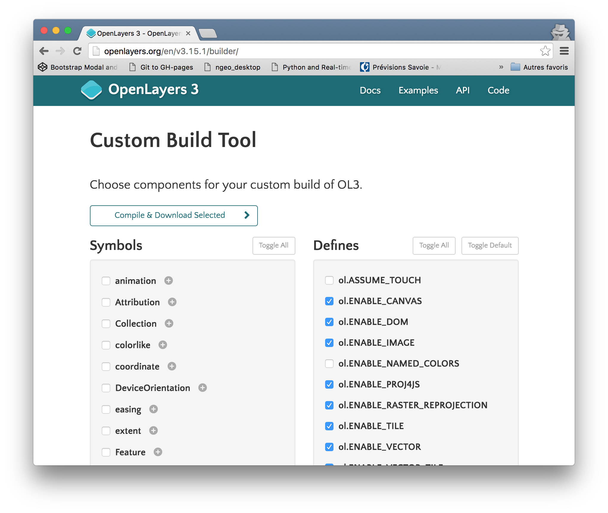
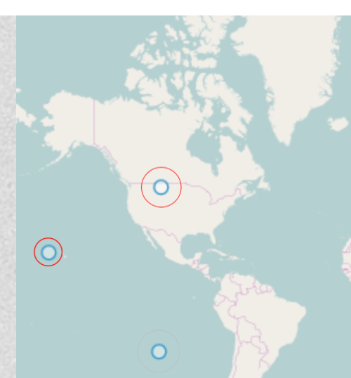
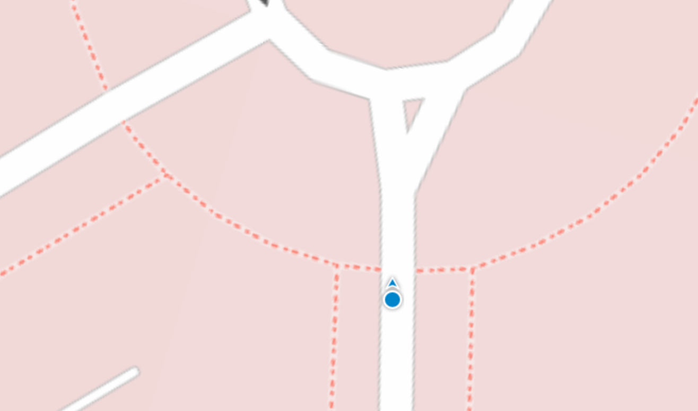
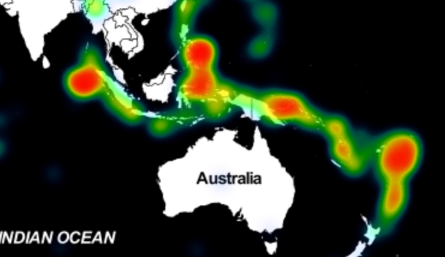
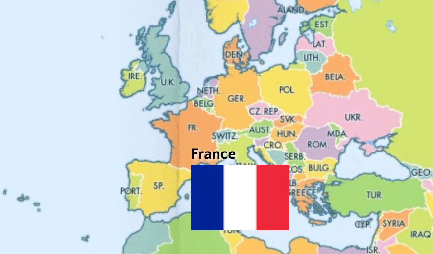
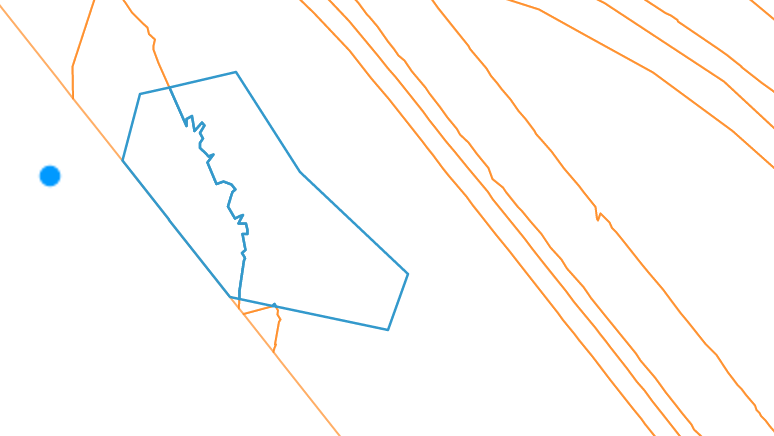
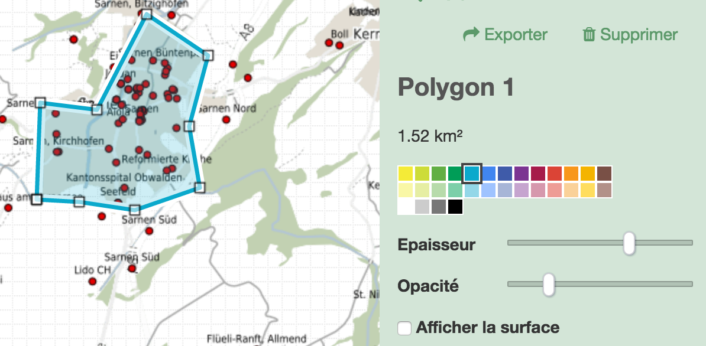

OpenLayers 3
FOSS4G FR 2016
pierre.giraud@camptocamp.com
- Où en est-on ?
- Fonctionnalités
- Côté technique
- Futur
- Démos
Où en est-on ?
Un peu d'histoire
Code sprint été 2012
Release alpha 1 en avril 2013
... puis après une longue gestation
Release 3.0.0 stable en août 2014
Première utilisation "pour de vrai"
Géoportail suisse - SwissTopo
Février 2014
Aujourd'hui
Version 3.15.1
Cycle de release régulier
~ tous les 1 à 1.5 mois
Un petit tour des fonctionnalités
La carte et la vue
ol.Map & ol.View
La carte est le composant principal
-
On la configure avec :
- un conteneur,
- des couches,
- des interactions,
- une vue.
La vue est l'objet qui va contrôler l'affichage de la carte.
-
On la configure avec :
- un centre,
- des résolutions.
var map = new ol.Map({
target: 'map',
layers: [new ol.layer.Tile({
source: new ol.source.OSM()
})],
view: new ol.View({
center: ol.proj.fromLonLat([5, 45]),
zoom: 4
})
});
Les couches et les sources
ol.layer & ol.source
Les couches indiquent comment afficher les données.
Les sources indiquent la provenance des données et comment les manipuler.
-
Quelques sources :
- OSM, MapQuest, Bing, ArcGIS,
- WMS, WMTS, XYZ,
- Image,
- Vector (+ ol.format),
- TileJSON
Les interactions et les contrôles
ol.interaction & ol.control
Les interactions gèrent les interactions entre l'utilisateur et la carte.
Les contrôles sont des composants primitifs ajoutés à la carte.
-
Quelques interactions :
- DragPan, DoubleClickZoom, MouseWheelZoom
- DragRotate, PinchZoom,
- Draw, Modify
-
Quelques contrôles :
- Zoom
- MousePosition
- ScaleLine
- Attribution
- FullScreen
Garçon ?
Un peu de vecteur svp.
Des couches, des sources, et des interactions pour manipuler des éléments vectoriels.
Et des styles pour représenter tout ça.
Couches, sources
new ol.layer.Vector({
source: new ol.source.Vector({
url: 'data/countries.geojson',
format: new ol.format.GeoJSON()
})
})
Styles
layer.setStyle(new ol.style.Style({
fill: new ol.style.Fill({
color: 'rgba(255, 255, 255, 0.3)'
}),
stroke: new ol.style.Stroke({
color: '#319FD3'
})
}));
Styles (bis)
layer.setStyle(new ol.style.Style({
image: new ol.style.Circle({
radius: 5,
fill: new ol.style.Fill({color: 'orange'})
}),
geometry: function(feature) {
var coordinates = feature.getGeometry()
.getCoordinates()[0];
return new ol.geom.MultiPoint(coordinates);
}
});
Les overlays
ol.Overlay
Pour rajouter facilement des composants (label, images, popups, etc...) à une coordonnée donnée.
var marker = new ol.Overlay({
position: ol.proj.fromLonLat([5, 45]),
positioning: 'center-center',
element: document.getElementById('marker')
});
map.addOverlay(marker);
Côté technique
Mobile first
OpenLayers 3 a été pensé pour fonctionner sur des appareils mobiles.
- Performances
- Support des évènements touch
- Compression du code
- etc...
Support des navigateurs modernes
Support des navigateurs IE 9 et supérieur qui permet de reposer sur des technologies modernes (Canvas par exemple).
Code optimisé
- Assertions
- Typage
- Pas de code non utilisé
- Performances du code
Compilation & minification
Avec Google Closure Compiler
Compilation en mode avancé.
Permet :
- Vérification du code (typage, assertions),
- Optimisation,
- Gestion des dépendances,
- Minification et obfuscation.
Compilation personalisée
Via un fichier de config
Online builder
Compilation OpenLayers + Application
Avec Google Closure Compiler
Minification optimale, gestion des dépendances, etc...
2D -> 3D
OL3 Cesium
Visualiser une carte OL3 sur un globe Cesium.
Optimisations du rendu vectoriel
- Indexation spatiale,
- Animation frames,
- Sur-simplification & clipping
Futur
Suppression des dépendances sur Google Closure Library
Utilisation de goog.module (vs. goog.provide)
+ de support pour WebGL
(Actuellement uniquement les points)
Démo WebGL(Financements appréciés)
Démos







Plus d'infos sur
Merci !
Merci
aux sponsors et financeurs
Merci
aux contributeurs
Committers ou non